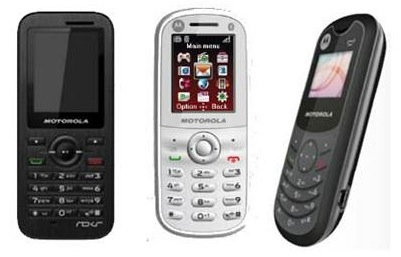
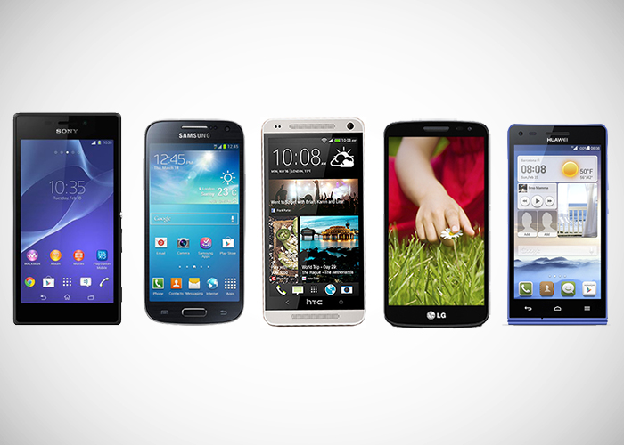
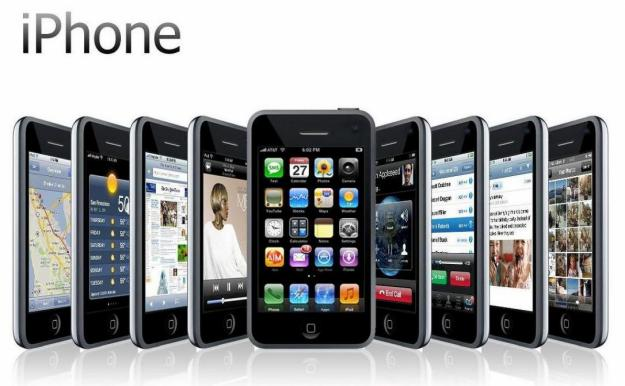

Alta gama
En este nivel encajan los smartphones que estén dotados con casi todos los elementos más evolucionados de la telefonía móvil

Media gama
Los smartphones de media gama se caracterizan por tener pantallas de calidad, pero de menor tamaño, resolución y profundidad de pixeles por pulgada; en la mayoría de los casos funcionan con una versión anterior a la más actual de su sistema operativo; los procesadores no tienen la potencia de los que encontramos en gamas superiores, y las cámaras y fotográficas generalmente cuentan con menos cantidad de megapíxeles.

Baja gama
Sus pantallas son de escasas dimensiones y resolución, poca memoria RAM y mínima capacidad de almacenamiento interno, cámaras VGA (no llegan al Megapíxel), menores herramientas, acceso a redes y aplicaciones, entre otros aspectos. Se diferencian de los teléfonos básicos (no inteligentes), por el hecho de permitir funcionalidades que van más allá de llamar y recibir llamadas.
